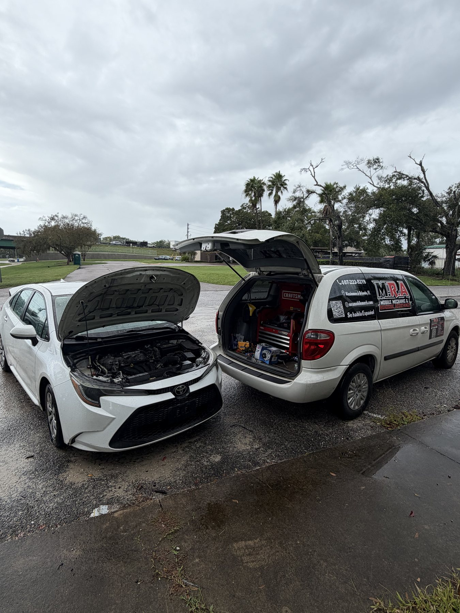
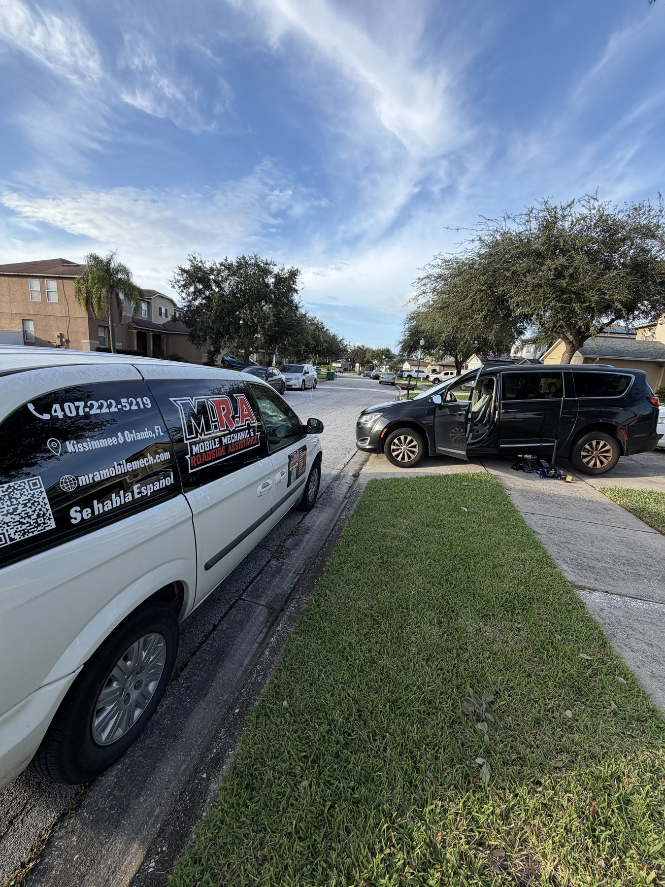
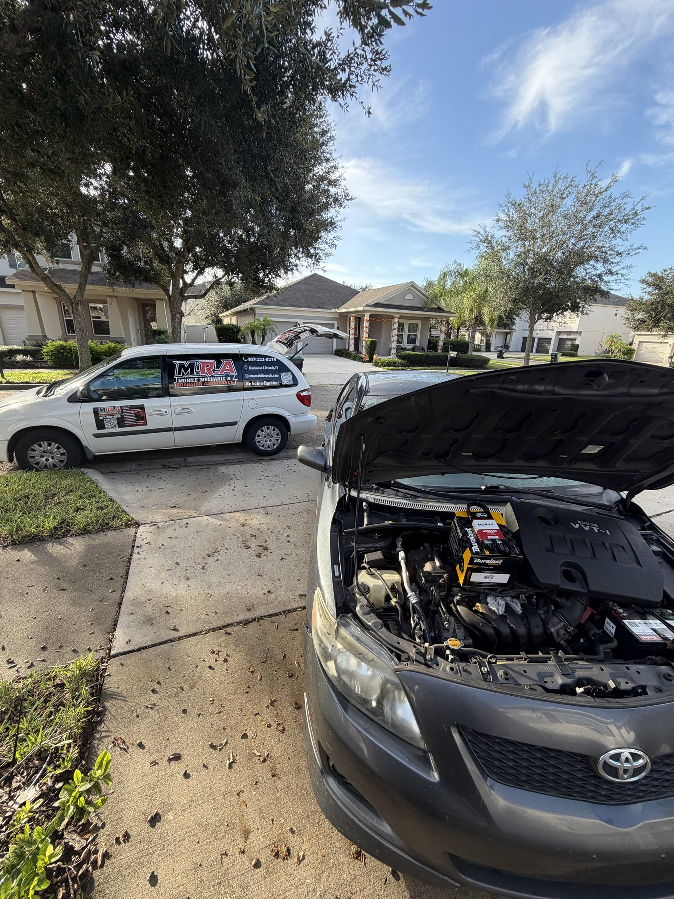
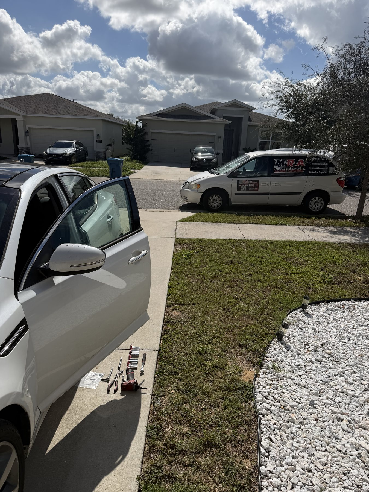
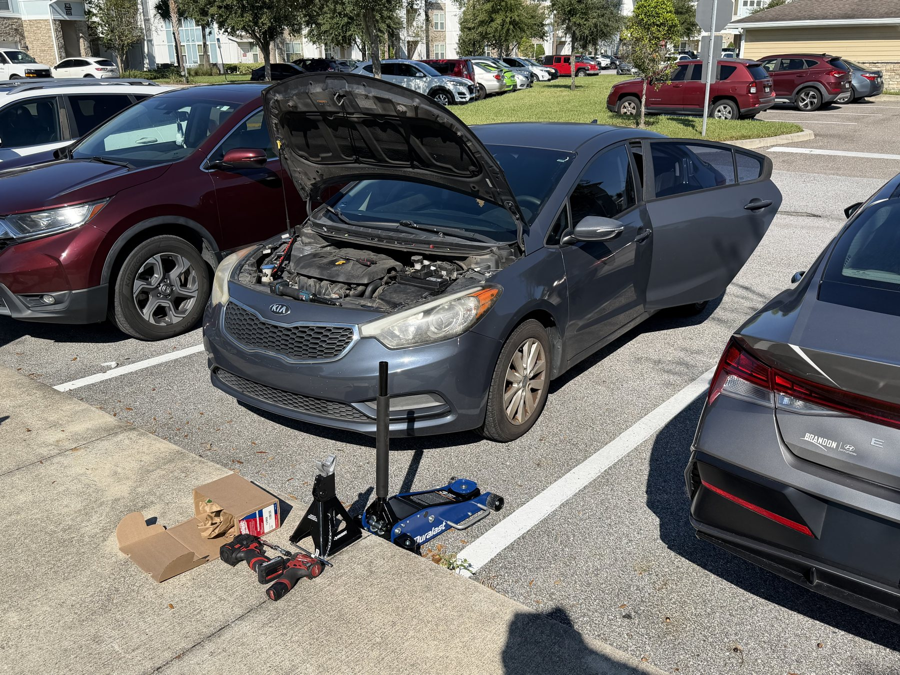
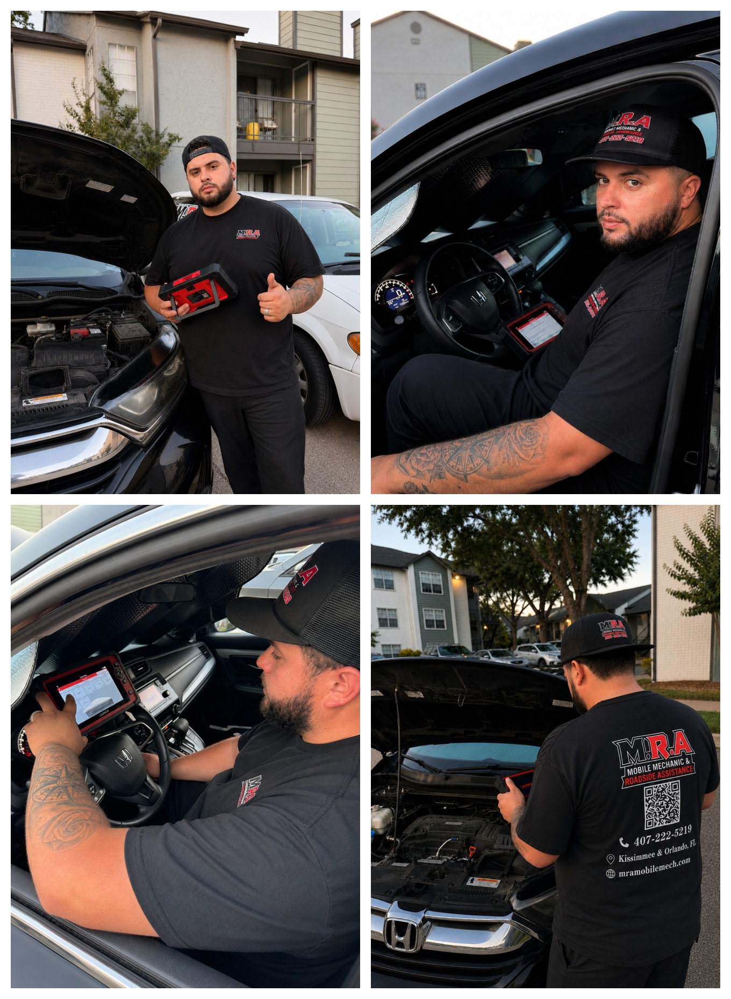

Diagnostics & Check Engine Light
Professional scanner diagnostics to accurately identify vehicle problems before replacing parts.
Mobile Mechanic Service • Kissimmee & Orlando, FL
Reliable, honest vehicle care at your home, work, or roadside in Kissimmee and Orlando.
What we do
Professional scanner diagnostics to accurately identify vehicle problems before replacing parts.
Repairs and maintenance performed at your home, workplace, or wherever your vehicle is located.
Jump starts, battery replacement, lockouts, flat tires, fuel delivery, and emergency roadside support.
Brakes, tune-ups, belts, batteries, alternators, starters, suspension, cooling systems, and much more.
Starting, charging, ignition, sensor, and drivability diagnostics performed with professional equipment.
Tell us about your vehicle and receive a fast estimate before scheduling your service.
On-site service
A look at MRA Mobile Mechanic & Roadside Assistance LLC on the job: arriving at your location, checking the vehicle, and using diagnostic equipment to help find the issue.





Service at your home, workplace, or another safe location.
We check the vehicle and use diagnostic equipment to identify the concern.
We discuss the findings and get your approval before moving forward with work.
Where we work
We come to you for mechanic service and roadside assistance in:
Why choose MRA Mobile Mechanic & Roadside Assistance LLC
We bring professional automotive service directly to your location, saving you time, money, and the inconvenience of visiting a repair shop. Whether you're at home, work, or stranded on the road, our goal is to get you back on the road quickly and safely.
Integrity guides every repair, every promise, and every customer we serve.
Need help today? Request a quote or contact us now.
Customer reviews
Real feedback from customers who have trusted MRA Mobile Mechanic & Roadside Assistance LLC with their vehicles.
“MRA was a lifesaver, literally... He helped keep my Range Rover alive when the battery lights started flashing! Miguel, was very professional, extremely informative, and did a really great job taking care of my car. I will absolutely call MRA again.”
“We highly recommended MRA Mobile Mechanic Roadside Assistance LLC. Great communications and pricing did extra work on my Van and was able to fix an additional problem.We will use them again .”
Reasonable price
“I can always count on MRA for all my car repair needs. Just this week, I had a noise coming from the hood. I reached out in the afternoon to Miguel for help and he responded right away. I scheduled the appointment for the next day in the morning. He showed up on time, diagnosed and fixed it in a couple hours at a fair price. I highly recommend MRA!”
Reasonable price
“I'm a single older woman and I felt very comfortable with Miguel. He was very kind and informative. I felt what he charged me was a reasonable price and impressed in how quickly he got back to me when I called and left a message. I will definitely let other people know about his service and if need help again, I will definitely call MRA Mobile Mechanic first.”
Great price
“Our daughter lives in Windermere and we are 10 hours away. Thankful to have Cano, who we trust, when she's having car trouble. He's knowledgeable and trustworthy. One less thing we have to worry about with her living so far away! We highly recommend him, especially if your kid needs help and you don't know who to call!”
Great price
“Thank you so much for your fast response and helping with our car issues twice already. So convenient to have a mobile mechanic and not have to wait for an appointment at a shop.”
Great price
“Quick & easy service very friendly take time to explain the situation doesn't rush you will use again”
“Miguel was an absolute pro through and through. Made it super easy to get scheduled, showed up promptly, and immediately got to work. He went above and beyond ensuring I had the correct part and that everything worked properly with my starter. I will 100% use him again because he is an honest and fair mechanic, which can be hard to find.”
Book a diagnostic
A pre-booking fee may be required depending on the service selected.
The required fee or deposit reserves your appointment. The amount and deposit requirements depend on the service and appointment selected through Square.
Any advanced or additional testing will be explained and approved before it is performed.
Terms & Conditions: By booking and paying any required pre-booking fee or deposit, the customer agrees to the terms listed on the Square booking site. Pre-booking fees and deposits are non-refundable unless those terms state otherwise. Additional testing and final service charges may vary based on travel distance, vehicle condition, and required work. No repairs or specialized testing will be performed without customer approval.
Contact us today to book your appointment. Call or text us for fast, dependable roadside and mechanic support in Kissimmee and Orlando.

Meet the owner
My name is Gilberto Miguel Rufat Alvarez, also known as Cano or Miguel. I am the founder and owner of MRA Mobile Mechanic & Roadside Assistance LLC.
I have worked professionally in the automotive industry since 2017. I earned my Automotive Technology certificate from Palm Beach State College in Lake Worth, Florida, and gained hands-on experience at both new and used car dealerships. Those experiences helped me build the knowledge and skills to diagnose and repair a wide range of vehicles.
My goal is to make dependable automotive service more convenient while treating every customer with honesty and respect.
Today, I bring that same commitment to every appointment, providing mobile repairs, diagnostics, maintenance, and roadside assistance directly at your location. I take the time to explain my findings, discuss your options, and get your approval before any work begins.
As an owner and mechanic, I take pride in careful diagnostics, attention to detail, and quality workmanship. My goal is to help you understand what your vehicle needs and feel confident about the service you receive.
At MRA, we don’t cut corners, we do it right.